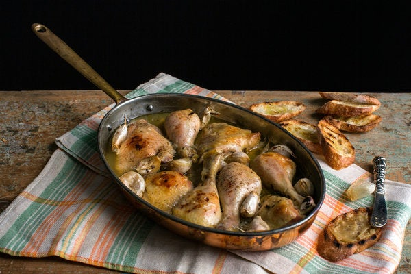

Chicken with 40 Cloves of Garlic

Looks like it tastes really good, right?
In the two decades after World War II, Jane Stern and Michael Stern told Marian Burros of The Times in 1991, “a nation once known for square meals and the bluenose abstinence of Prohibition fell in love with deluxe food, vintage wine and the joy of cooking.” They captured that gourmania in their book of that year, “American Gourmet,” and this recipe, for a luxe and amazing casserole of nutmeg-scented chicken and garlic, comes from it. Serve the dish with a baguette or two, and squeeze the buds of garlic out on the bread. Spread the mash like butter and use the bread to mop up the luscious sauce.
Burros, M. (2023, December 6). Chicken with 40 Cloves of Garlic. The New York Times Cooking. https://cooking.nytimes.com/recipes/3764-chicken-with-40-cloves-of-garlic
Ingredients
- ⅔ cup olive oil
- 8 chicken drumsticks
- 8 chicken thighs
- 4 celery ribs, cut into 4 inch-long strips
- 2 cups chopped onion
- 6 parsley springs
- 1 teaspoon dried tarragon
- ½ cup dry vermouth
- 2½ teaspoons salt
- ¼ teaspoon freshly ground pepper
- dash grated nutmeg
- 40 cloves garlic, unpeeled
- Freshly sliced French bread
Steps
- Put the oil in a shallow dish and add the chicken pieces; coat evenly with oil.
- Preheat oven to 375 degrees.
- In a heavy 6-quart casserole, combine the celery, onions, parsley and tarragon. Lay the oiled chicken pieces on top. Pour on the vermouth. Sprinkle with salt and pepper and a dash of nutmeg. Tuck the garlic cloves in and around the chicken pieces. Cover the casserole tightly with aluminum foil, then the lid. Bake 90 minutes without removing the lid.
- Serve chicken, pan juices and garlic cloves with French bread. Diners should squeeze the buds of garlic from their husks onto the bread, then spread the garlic like butter.
Suggested Pairing
Drink the rest of the vermouth bottle like a vagrant wino.